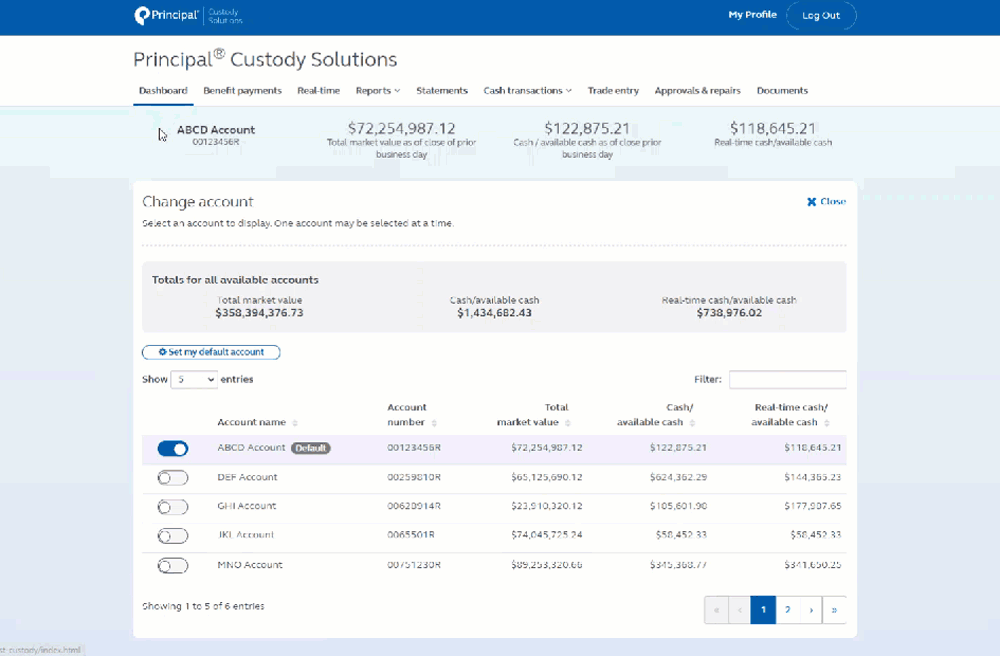

Web design Usability testing Interviews
When Principal announced their intentions to purchase the Retirement and Trust & Custody business from Wells Fargo, it was all hands on deck to be prepared for the new customers day 1 of the transition. I was brought in to translate the current Wells Fargo Trust & Custody website experience for custodians into the Principal ecosystem. The project was complicated because we weren't granted access to Wells Fargo customers until after the transition. I relied on stakeholder conversations and interviews to learn about the business so I could produce the user flows and experiences. In the end, the launch was a successful, with the website design still being used today.